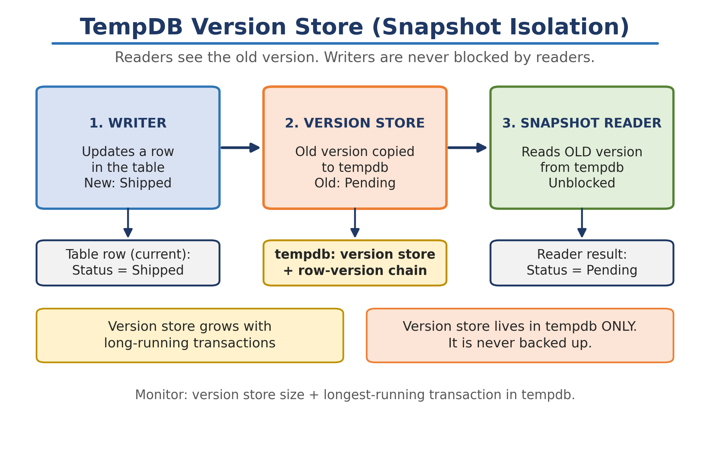
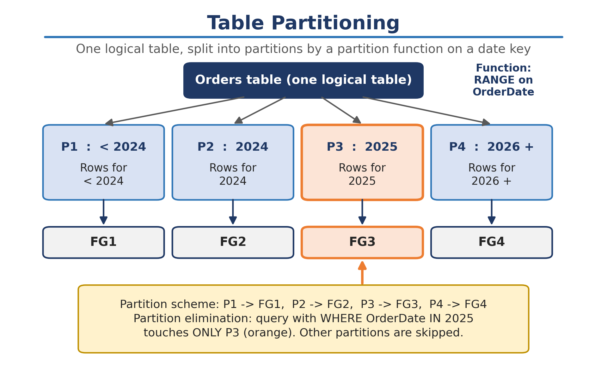

Chapter 10: TempDB, Partitioning & Storage Basics
TempDB and storage internals explain many performance problems that look like slow queries at first. This chapter covers what uses TempDB, how partitioning and filegroups organize data, and how pages and extents work underneath every table. Knowing these basics helps you diagnose contention and choose the right physical design.
In this chapter:
Key learning: TempDB contention, missing partition elimination, and poor file placement all show up as waits and slow scans, even when the query logic is correct. A strong answer connects the physical structure to the symptom and names the fix that matches the cause.
Q105. What is TempDB for, what uses it, and why does its health matter for the whole instance?
Answer: TempDB is a system database that provides shared scratch space for the whole instance. It is recreated empty every time SQL Server starts, it always uses the SIMPLE recovery model, and it cannot be backed up, restored, or dropped. There is only one TempDB per instance, so every database and every session shares it.
TempDB is used by local and global temporary tables, table variables, the version store for snapshot isolation and READ_COMMITTED_SNAPSHOT, sort and hash spills, cursors, triggers and their inserted and deleted tables, online index operations, DBCC checks, and internal work tables for grouping and spooling. Even a query that never mentions a temp table can use TempDB when its sort or hash spills from memory.
Because TempDB is shared, pressure on it affects every workload. A full TempDB, slow TempDB storage, or allocation contention can slow or fail queries in databases that seem unrelated, which is why TempDB sizing, file count, file placement, and autogrow settings are instance-level decisions, not per-database tuning.
CREATE TABLE #TempOrderTotals (
CustomerID INT NOT NULL,
OrderCount INT NOT NULL,
TotalAmount DECIMAL(12, 2) NOT NULL
);
INSERT INTO #TempOrderTotals (CustomerID, OrderCount, TotalAmount)
SELECT CustomerID, COUNT(*), SUM(TotalAmount)
FROM dbo.Orders
GROUP BY CustomerID;
SELECT CustomerID, OrderCount, TotalAmount
FROM #TempOrderTotals
ORDER BY TotalAmount DESC;
DROP TABLE #TempOrderTotals;
SELECT name, physical_name, size * 8 / 1024 AS size_mb
FROM tempdb.sys.database_files;Key learning: TempDB is shared scratch space for the whole instance, so pressure on it slows every database, not just one workload.
Q106. What causes TempDB PFS, GAM, and SGAM contention, and how do you fix it on modern SQL Server?
Answer: PFS, GAM, and SGAM are allocation pages that track free space. PFS tracks how full each page is, GAM tracks which extents are free, and SGAM tracks mixed extents that still have free pages. In TempDB these pages sit at well-known locations in the first data file, so when many sessions create and drop temp tables at once, they all latch the same few pages and wait on PAGELATCH_UP or PAGELATCH_EX for pages such as 2:1:1, 2:1:2, and 2:1:3. This is latch contention on allocation metadata, not row locking.
The main fix is to spread allocations across multiple equal-sized TempDB data files on the same fast storage, with the same initial size and the same autogrow settings so SQL Server uses proportional fill evenly. A common starting point is one file per logical processor up to eight files, then add files in groups if contention remains, while monitoring latch waits rather than adding files blindly.
Older guidance named trace flags 1118 and 1117: 1118 forced uniform extent allocations to reduce SGAM contention, and 1117 forced all files in a filegroup to grow together. Since SQL Server 2016 both behaviors are the default for TempDB, so the flags are interview history, not something to enable on a modern instance. On a pre-2016 instance they still apply, but on current versions the fix is files, sizing, and autogrow, plus checking whether the workload is abusing temp tables in the first place.
SELECT session_id, wait_type, wait_duration_ms, resource_description
FROM sys.dm_os_waiting_tasks
WHERE wait_type LIKE 'PAGELATCH%'
AND resource_description LIKE '2:%';
ALTER DATABASE tempdb ADD FILE (
NAME = 'tempdev2',
FILENAME = 'C:\SQLData\tempdb2.ndf',
SIZE = 1024MB,
FILEGROWTH = 256MB
);
GO
-- Check the current TempDB file layout: equal sizes, equal growth
SELECT name, size * 8 / 1024 AS SizeMB, growth, is_percent_growth
FROM tempdb.sys.database_files;Key learning: Spreading TempDB allocations across equal-sized files removes the single-page latch bottleneck that PFS, GAM, and SGAM contention creates.
Q107. How does the version store in TempDB work, how is it cleaned up, and how do you monitor it?
Answer: When row versioning is enabled, every update or delete stores the previous committed version of the row in the version store in TempDB. The current row carries a 14-byte pointer to the newest version, and versions link together in a chain ordered by transaction sequence number, so a reader can walk the chain to find the version that was committed when its transaction or statement started.
Cleanup is done by a background thread that removes versions no active snapshot transaction can still need. Versions are kept while the oldest active snapshot transaction is still open, so one long-running reader can block cleanup for the whole version store and grow TempDB even when current write activity is low. The version store lives in TempDB only, is never backed up, and starts empty after a restore or restart.
Monitor version-store space per database, the oldest active transaction, and TempDB free space together. A growing version store with an old open transaction points to a reader holding versions open, while a growing version store with heavy writes and short transactions points to write volume and TempDB capacity.
SELECT DB_NAME(database_id) AS database_name, reserved_page_count, reserved_space_kb
FROM sys.dm_tran_version_store_space_usage;
SELECT transaction_id, transaction_begin_time,
DATEDIFF(MINUTE, transaction_begin_time, GETDATE()) AS open_minutes
FROM sys.dm_tran_active_transactions
WHERE transaction_state = 2
ORDER BY transaction_begin_time;
SELECT COUNT(*) AS version_count
FROM sys.dm_tran_version_store;Key learning: The version store keeps old row versions until no active snapshot transaction needs them, so one long reader can grow TempDB for everyone.

Q108. How does table partitioning work, and what do the partition function and partition scheme do?
Answer: Partitioning splits a table or index into smaller physical pieces called partitions, while the table still looks like one logical object to queries. Each row belongs to exactly one partition based on the value of the partition column, and each partition can be stored, maintained, and moved separately.
The partition function defines the boundary values and whether each boundary belongs to the partition on the left or the right. RANGE RIGHT puts the boundary value in the partition to the right, and RANGE LEFT puts it in the partition to the left. The partition scheme maps each partition produced by the function to a filegroup, either all partitions to one filegroup or different partitions to different filegroups.
To partition a table, create the function, create the scheme that uses the function, and create the table ON the scheme with the partition column. The partition column must be part of the clustered index key, and unique constraints and unique indexes must include it to stay aligned. New partitions are added with SPLIT RANGE and removed with MERGE RANGE, and partitioning helps manageability and partition-level operations far more reliably than it helps arbitrary query speed.
CREATE PARTITION FUNCTION pf_OrdersByYear (DATE)
AS RANGE RIGHT FOR VALUES ('2024-01-01', '2025-01-01', '2026-01-01');
GO
CREATE PARTITION SCHEME ps_OrdersByYear
AS PARTITION pf_OrdersByYear ALL TO ([PRIMARY]);
GO
CREATE TABLE dbo.OrdersPartitioned (
OrderID INT NOT NULL,
OrderDate DATE NOT NULL,
CustomerID INT NOT NULL,
TotalAmount DECIMAL(10, 2) NOT NULL
)
ON ps_OrdersByYear (OrderDate);
GO
SELECT partition_number, rows
FROM sys.partitions
WHERE object_id = OBJECT_ID('dbo.OrdersPartitioned');Key learning: The partition function decides which partition a row belongs to, and the partition scheme decides which filegroup stores each partition.
Figure 20. Partition elimination: the query's date filter touches only the 2025 partition.
The partition function maps each row to a partition by OrderDate; the scheme maps partitions to filegroups. A query on 2025 reads only Partition 3 — the others are skipped entirely.

Q109. How does partition switching with SWITCH work, and why is it useful for fast loads and archives?
Answer: SWITCH moves a whole partition, or a whole table, by changing metadata pointers only, with no data movement. Switching a partition out to a staging table, or switching a loaded staging table into an empty partition, takes seconds even for millions of rows, because the pages themselves are simply reassigned from one object to another.
SWITCH has strict requirements. The source and target must have identical columns, types, and nullability, must sit on the same filegroup, must have matching partition-aligned indexes, and the target partition or table must be empty. For switching data in, the staging table needs a CHECK constraint proving its rows fit the target partition boundary, and foreign keys and other blocking dependencies must not prevent the switch.
The common patterns are fast load, where data is loaded and validated in a staging table and then switched into the partitioned table, and fast archive, where an old partition is switched out to a staging table and then moved, compressed, or truncated. Switching out a partition and truncating the staging table is also a fast way to delete one partition without logging every row delete.
CREATE TABLE dbo.OrdersArchive2024 (
OrderID INT NOT NULL,
OrderDate DATE NOT NULL,
CustomerID INT NOT NULL,
TotalAmount DECIMAL(10, 2) NOT NULL,
CONSTRAINT CK_OrdersArchive2024_Date CHECK (OrderDate >= '2024-01-01' AND OrderDate < '2025-01-01')
)
ON [PRIMARY];
GO
ALTER TABLE dbo.OrdersPartitioned SWITCH PARTITION 2 TO dbo.OrdersArchive2024;
GO
SELECT COUNT(*) AS archived_rows
FROM dbo.OrdersArchive2024;Key learning: SWITCH moves a whole partition by changing metadata only, so archiving or loading millions of rows takes seconds instead of a long data copy.
Q110. What is partition elimination, and what are partition-aligned indexes?
Answer: Partition elimination is when the optimizer uses a predicate on the partition column to skip partitions that cannot contain matching rows. A query filtered to one year reads only that year's partition instead of scanning every partition, and the execution plan shows only the partitions actually accessed. Elimination requires a usable predicate on the partition column, so wrapping the column in a function, using the wrong data type, or omitting the column can defeat it and force a scan of all partitions.
A partition-aligned index is an index partitioned with the same partition function and scheme as its table, so each index partition lines up with the matching table partition. Aligned indexes allow partition-level maintenance such as rebuilding one partition, and they are required for SWITCH, because the switch must move table and index partitions together. A non-aligned index spans all partitions on a different scheme or filegroup, which can help some queries but blocks SWITCH and forces index operations to touch the whole index.
Design for both: filter on the partition column in queries that should eliminate, and keep indexes aligned unless a specific query pattern justifies a non-aligned index and the loss of SWITCH.
SELECT OrderID, TotalAmount
FROM dbo.OrdersPartitioned
WHERE OrderDate >= '2025-01-01'
AND OrderDate < '2026-01-01';
CREATE NONCLUSTERED INDEX IX_OrdersPartitioned_Customer
ON dbo.OrdersPartitioned (CustomerID)
ON ps_OrdersByYear (OrderDate);Key learning: Partition elimination skips partitions the query cannot need, and aligned indexes keep each index partition matched to its table partition so SWITCH and maintenance stay fast.
Q111. What is inside an 8KB data page, and what are extents, PFS, GAM, and SGAM?
Answer: A data page is 8KB, or 8192 bytes. It starts with a 96-byte page header holding the page id, page type, and allocation details, followed by data rows, with free space in the middle and a row offset array at the end that points to the start of each row. At most 8060 bytes are available for data rows, and the offset array lets SQL Server find rows without scanning the page.
Pages are grouped into extents of eight contiguous pages, or 64KB. A uniform extent holds pages for a single object, while a mixed extent can hold pages for up to eight different small objects. Small tables start on mixed extents and move to uniform extents as they grow, which reduces wasted space for tiny objects.
Allocation is tracked by special pages. PFS, or Page Free Space, records how full each page is and whether it holds ghost records. GAM, or Global Allocation Map, records which extents are free, and SGAM, or Shared Global Allocation Map, records which mixed extents still have free pages. IAM pages track which extents belong to a given object, and DBCC IND, DBCC PAGE, and sys.dm_db_database_page_allocations expose this structure for inspection.
DBCC TRACEON (3604);
DBCC IND ('SalesDB', 'dbo.Orders', 1);
DBCC PAGE ('SalesDB', 1, 100, 3);
SELECT TOP 20 allocated_page_file_id, allocated_page_page_id
FROM sys.dm_db_database_page_allocations(DB_ID('SalesDB'), OBJECT_ID('dbo.Orders'), NULL, NULL, 'DETAILED');Key learning: Every table is stored as 8KB pages grouped into 64KB extents, and PFS, GAM, and SGAM maps track which pages and extents are free.
Q112. What are filegroups, and when would you use PRIMARY, user-defined, and read-only filegroups?
Answer: A filegroup is a named collection of data files, and every table, index, and partition is stored on one filegroup, except that a partitioned object can spread partitions across several filegroups. Log files do not belong to filegroups. Each database has one PRIMARY filegroup that holds the primary data file and all system objects, and one filegroup is marked as the default for new objects that do not name a filegroup.
User-defined filegroups let you control placement and manageability. Put hot tables on fast storage, isolate a large table from the rest of the database, and back up and restore filegroups independently for piecemeal restores, where PRIMARY and critical filegroups come online first and other filegroups follow.
A read-only filegroup accepts no writes, which suits archive and history data that should no longer change. Mark a filegroup read-only after its data is final, back it up once, and restore it as needed without worrying about later changes, then return it to read-write only if a correction is truly required. Read-only filegroups also make it clear to the team that the data is frozen, not just old.
ALTER DATABASE SalesDB ADD FILEGROUP OrdersFG;
GO
ALTER DATABASE SalesDB ADD FILE (
NAME = 'SalesDB_Orders',
FILENAME = 'C:\SQLData\SalesDB_Orders.ndf',
SIZE = 512MB,
FILEGROWTH = 128MB
) TO FILEGROUP OrdersFG;
GO
CREATE TABLE dbo.OrdersArchive (
OrderID INT NOT NULL,
OrderDate DATE NOT NULL,
TotalAmount DECIMAL(10, 2) NOT NULL
)
ON OrdersFG;
GO
ALTER DATABASE SalesDB MODIFY FILEGROUP OrdersFG READONLY;
GO
SELECT name, type_desc, is_read_only, is_default
FROM sys.filegroups;Key learning: Filegroups let you place, back up, and restore parts of a database independently, and read-only filegroups protect data that should no longer change.
QueryLab — Self-Hosted SQL Performance Workbench
EXPLAIN visualizer · Index advisor · Slow query dashboard · SQL Server